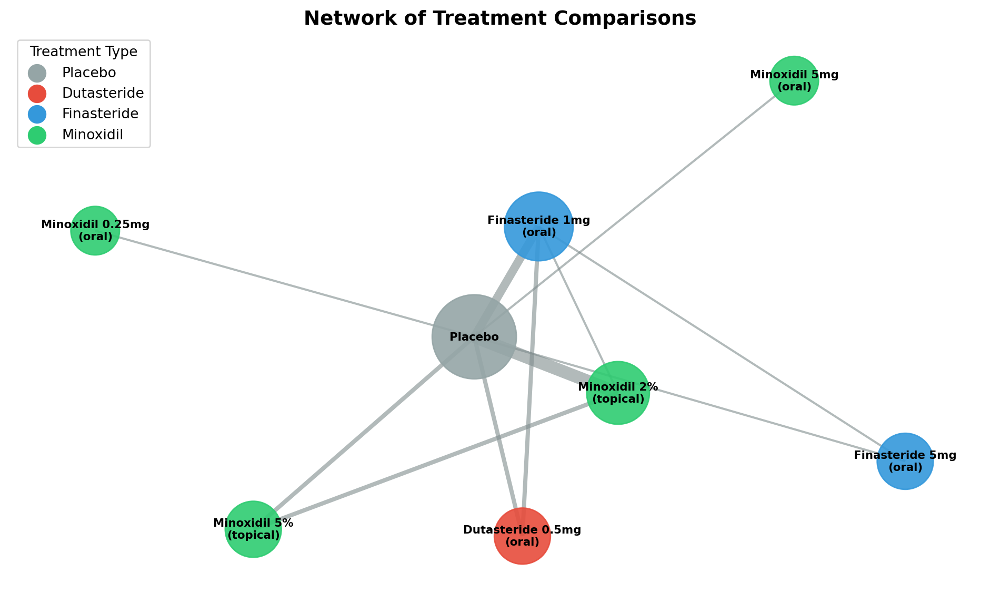

The Most Advertised Treatment Isn’t Always the Most Effective
Jiro Amato
Hair Loss is Common
What You See Isn’t What Works Best
Most Prominent ≠ Most Effective
The Evidence: Treatment Rankings
Figure 1
How Do We Know? Network Meta-Analysis

Figure 2
The Takeaway
Accessibility ≠ Effectiveness
Talk to your doctor about all options
References
Gupta, A.K., et al. (2022). Relative Efficacy of Minoxidil and the 5-alpha Reductase Inhibitors in Androgenetic Alopecia Treatment of Male Patients: A Network Meta-Analysis. JAMA Dermatology, 158(3), 266-274.
American Hair Loss Association - Men’s Hair Loss Statistics
Mordor Intelligence - Hair Loss Treatment Products Market Size